Bosses Principais
Vamos conferir os inimigos principais e Obrigatórios do jogo!
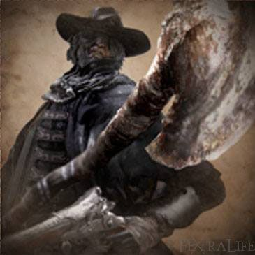
Clique na imagem para ver uma gameplay!
Padre Gascoigne
O Padre Gascoigne pode primeiro ser encontrado como uma invocação para auxiliar contra a Fera Clerical, e então ele será encontrado novamente como um chefe na Tumba de Oedon. Ele é propício à Parries/Viscerais, e em sua segunda fase sendo vulnerável a dano de Fogo e a dano de Serra
Padre Gascoigne também possui outra fraqueza, sendo essa a Caixa de Música, este item quando usado em ambas suas fases causam Atordoamento, deixando o chefe propício a ataques, porém, este item só pode ser usado três vezes, e após isso ele automaticamente passará para sua segunda fase independente da quantidade de vida.
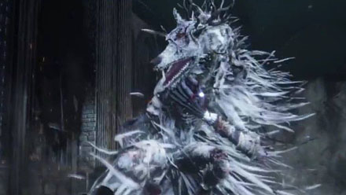
Clique na imagem para ver uma gameplay!
Vigário Amélia
Vigário Amélia é necessário para progredir no jogo e derrotá-la vai transformar o estado do mundo para o horário noturno. Ela é uma humana que lentamente se transforma em uma variante de uma Fera Clerical, mas de acordo com a história do jogo, sendo mais forte, tornando-a vulnerável ao dano de Fogo e dano de Serra.
Esta chefe é vulnerável à ataques em sua mão quando usado armas de Serra, deixando Vigário Amélia atordada após uma quantidade de dano, sendo possível dar um dano crítico em sua cabeça.
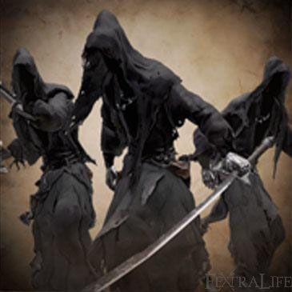
Clique na imagem para ver uma gameplay!
Sombras de Yharnam
A luta contra as Sombras de Yharnam é uma luta contra três inimigos ao mesmo tempo, onde cada um usa estilos de luta diferentes, sendo um espadachim, um mago, e outro que mistura os dois, após uma certa quantidade de vida eles ativam sua segunda fase onde começam a usar ataques com cobras gigantes.
Um dos três é forte contra ataques de dano de Raio e dano de Arcano, porém, os outros são muito vulneráveis a dano de Raio.
A melhor estratégia contra esse boss é rodear o mapa, não deixando eles te cercarem, e dar parries, fazendo com que sofram bastante de dano, eliminando primeiramente o espadachim deixa o resto da luta muito mais fácil.
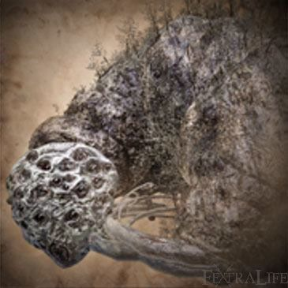
Clique na imagem para ver uma gameplay!
Rom, a Aranha Inexpressiva
Rom é um chefe do tipo Semelhante, ou seja, é extremamente fraco contra ataques que causam dano de Raio e dano de Fogo.
Este chefe tem "3" fases, onde a primeira começa quando você der o primeiro ataque, ele fica somente olhando pra você sem dar dano, porém, após certa quantidade dano ele se teleporta, e quando reaparece, invoca aranhas menores que causam muito dano. A terceira fase começa após a vida chegar na metade, onde Rom começa a utilizar ataques a curta e longa distância, dificultando a aproximação.
Tanto Rom quanto as aranhas menores recebem dano decente somente em seus corpos, deixando ataques na cabeça inviáveis. Caso o player seja derrotado, quando refazer a luta as aranhas menores já estarão desde o começo da luta.
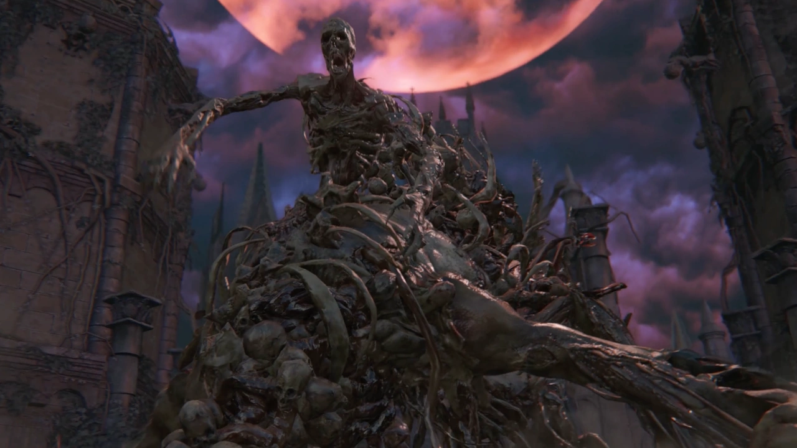
Clique na imagem para ver uma gameplay!
O Renascido
O Renascido é um boss gigante feito de amontado de partes de corpos sem lógica, sua arena também é grande e contém outros inimigos, sendo esses bruxas que ficam arremesando bolas de fogo no player.
Este chefe é fraco contra dano de Raio e dano de Fogo, e forte contra dano de Arcano.
A melhor estratégia é utilizar Papéis de Raio e atacar com armas que causam bastante dano, isso quebra sua postura deixando Renascido aberto para um ataque critico, porém, é mais recomendado que continue atacando, ao invés de realizar o ataque critico.
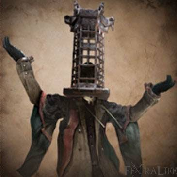
Clique na imagem para ver uma gameplay!
Micolash, o Anfitrão do Pesadelo
Considerado o pior boss do jogo, Micolash é um boss humanóide que corre pela arena, fazendo com que o player o persiga.
O objetivo do jogador é fazer com que ele vá para uma sala específica, e então ele ficar encurralado. Após chegar na metade da vida ele irá teleportar e então outra perseguição começa. E o ciclo se repete, porém, dessa vez você terá que ir para um ponto específico onde ele estará.
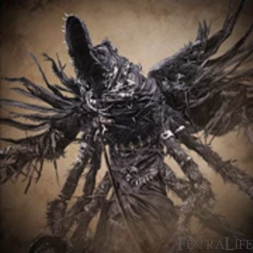
Clique na imagem para ver uma gameplay!
Ama-de-Leite de Mergo
Este é um dos chefes finais do jogo, Ama-de-Leite de Mergo é um boss grande com muita resistência e ataques com dano elevado.
Este chefe tem duas fases, sendo a primeira com o boss executando ataques previsiveis, porém, com muito dano e não defensáveis. Na segunda fase, o chefe ataca com mais frequencia, e pode teleportar e invocar clones pela arena.

Clique na imagem para ver uma gameplay!
Gehrman, o Primeiro Caçador
O jogo possui três finais, sendo o primeiro "Submeter sua vida" onde você aceita sua morte pelas mãos de Gehrman. Porém, caso escolha "Recusar", Gehrman se torna um dos bosses finais.
Gehrman é um chefe humanóide com extrema velocidade, seus ataques são repentinos, porém, ainda possíveis de acertar parries, ele possui tanto ataques com sua Foice quanto com suas armas de fogo, onde ele consegue dar parry no jogador, deixando vulnerável à um ataque fatal.
Em sua segunda fase, sua velocidade aumenta e seus ataques causam mais dano e ele começa usar desvios instântaneos, o que deixa o combate muito mais difícil.
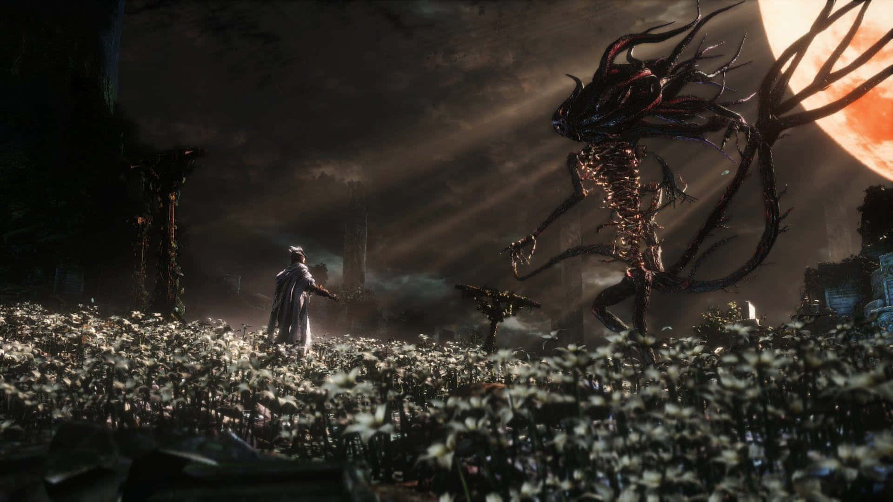
Clique na imagem para ver uma gameplay!
Presença da Lua
Este chefe só aparece no terceiro final, sendo o boss final do jogo. Para liberar esse final, é preciso consumir 3 Terços de Cordão Umbilical, sendo conseguidos durante o jogo. E após isso, escolher a opção "Recusar", quando falar com Gehrman. Após derrotar o chefe anterior, a Presença da Lua se revelará, continuando a luta.
Presença da Lua é um chefe grande e monstruoso, porém, seus ataques são rápidos e causam muito dano.
Bosses Opcionais
Vamos conferir os inimigos Secúndarios e Opcionais do jogo! (não considerando chefes de cálice)
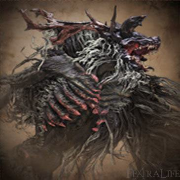
Fera Clerical
A Fera Clerical provavelmente será o primeiro chefe que o jogador encontrará, embora derrotá-la seja totalmente opcional. A Fera Clerical é extremamente vulnerável a dano de Fogo e a dano de Serra, portanto, usar esses tipos de dano tornará a luta mais fácil.
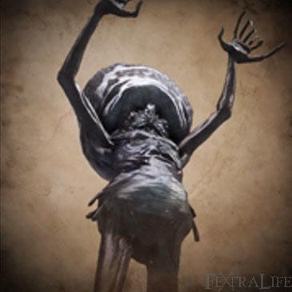
Emissário Celestial
Emissário Celestial é um boss opcional da categoria Great One e também um boss de Cálice.
O Emissário Celestial pode ser encontrado nos Jardins de Lumenflower, localizada na Catedral Superior. Também pode ser encontradop no Cálice de Isz.
Este boss tem uma mecânica onde ele invoca clones que atacarão no lugar dele, e após você dar dano suficente no chefe, ele para de invocar e se transforma numa versão gigante de si mesmo, porém, se der dano suficiente é possível matá-lo antes dele trocar de fase. Ele pode ser identificado entre seus clones como o único que não avança para atacar.
Emissário Celestial tem fraqueza a dano de Fogo e a dano de Raio
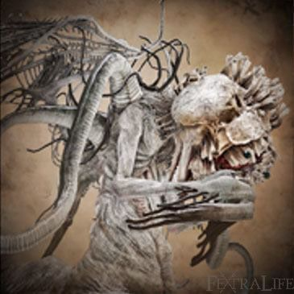
Ebrietas, Filha do Cosmos
Ebrietas é um inimigo do tipo Semelhante, o que significa que este boss é vulnerável a dano de Raio. Ela é localizada no Altar do Desespero, que é próximo a área do Emissário Celestial.
Este boss é vulnerável a ataques em sua cabeça, que após um tempo é Atordoada liberando uma ataque crítico.
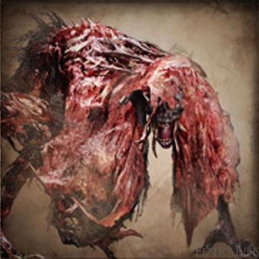
Fera Sedenta de Sangue
A Fera Sedenta de Sangue é um boss opcional encontrado no final da Antiga Yharnam. É um boss do tipo Fera, ou seja, é vulnerável a dano de Fogo.
Este boss pode ser distraido usando o item Coquetel de Sangue Pungente, onde ele perde o foco do player para ir atrás do item arremessado, abrindo brecha para ataques.
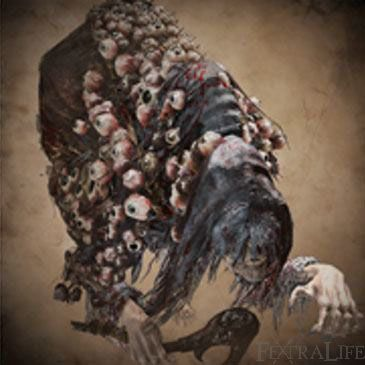
Bruxas de Hemwick
Bruxas de Hemwick são encontradas na região de Alamedas de Hemwick.
As Bruxas de Hemwick podem ser encontradas na Mansão das Bruxas, localizada ao final da área de Alamedas de Hemwick.
Este boss possui uma mecânica única baseada em invocações. As bruxas são praticamente indefesas, mas convocam servos chamados Mad Ones para atacar o jogador. Durante a luta, uma segunda bruxa surgirá após certo tempo. As duas se teleportam pela arena e ficam invisíveis quando não estão atacando. Quanto maior a quantidade de Discernimento do jogador, mais servos serão invocados, tornando o combate mais difícil.
Bruxas de Hemwick possuem fraqueza a dano de Raio e podem ser derrotadas com mais facilidade ao focar em encontrá-las rapidamente antes que acumulem muitos servos na arena.
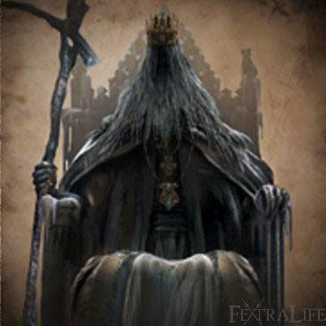
Mártir Logarius
O Mártir Logarius pode ser encontrado no topo do Castelo Abandonado de Cainhurst, em uma área chamada Trono de Logarius.
Este boss possui duas fases distintas. Na primeira fase, ele utiliza principalmente ataques arcanos de longa distância, lançando projéteis em forma de caveiras e explosões mágicas. Após perder parte da vida, ele inicia a segunda fase, tornando-se muito mais agressivo e passando a utilizar ataques corpo a corpo, investidas aéreas e espadas espectrais que perseguem o jogador. Durante a transformação, é possível interrompê-lo com um ataque carregado pelas costas para facilitar o combate.
Mártir Logarius possui alta resistência a dano de Fogo, Raio e Arcano. A melhor estratégia é aproveitar as oportunidades de aparar seus ataques com armas de fogo e executar ataques viscerais durante a segunda fase.
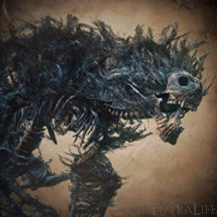
Paarl, Fera Negra
O Paarl, Fera Negra pode ser encontrado após o jogador ser capturado por um Sequestrador e levado para a Prisão Hypogean Gaol. A arena do boss fica localizada em uma grande câmara subterrânea acessível pela área.
Este boss é uma enorme criatura esquelética envolta por eletricidade. Sua principal mecânica consiste em utilizar ataques rápidos e explosões de energia elétrica para pressionar o jogador. Ao causar dano suficiente em suas pernas, é possível derrubá-lo temporariamente, interrompendo sua aura elétrica e criando uma oportunidade para causar grande quantidade de dano. Após se recuperar, Paarl tentará restaurar sua eletricidade e continuará utilizando ataques de área e investidas velozes.
Paarl, Fera Negra tem fraqueza a dano de Fogo e pode ser derrotado com mais facilidade ao focar seus ataques nas pernas para derrubá-lo repetidamente.
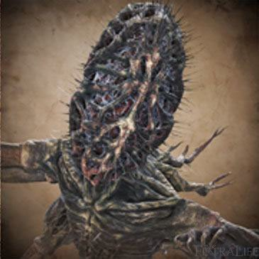
Amygdala
A Amygdala pode ser encontrada ao final da Fronteira do Pesadelo, uma região repleta de criaturas e perigos. Também pode ser encontrada como boss em alguns Cálices.
Este boss é uma gigantesca criatura de múltiplos braços que utiliza ataques de longo alcance e golpes capazes de atingir grande parte da arena. Durante a luta, Amygdala frequentemente expõe sua cabeça e braços, que são seus pontos mais vulneráveis. Na fase final, ela arranca dois de seus próprios braços para utilizá-los como armas, aumentando significativamente o alcance e o dano de seus ataques. Permanecer atento aos seus saltos e golpes esmagadores é essencial para sobreviver.
Amygdala tem fraqueza a dano de Arcano e recebe dano adicional ao ser atingida na cabeça, seu principal ponto fraco.
Bosses DLC - Old Hunters
Vamos conferir os inimigos da DLC Old Hunter!
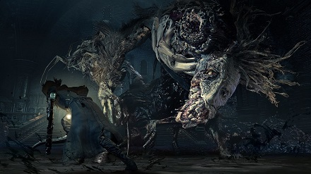
Ludwig, o Amaldiçoado
Ludwig, o Amaldiçoado pode ser encontrado no Pesadelo do Caçador, em uma grande arena localizada após os rios de sangue e cadáveres da região. Ele foi o primeiro Caçador da Igreja de Cura e, após sucumbir à praga, transformou-se em uma monstruosa aberração.
Este boss possui duas fases distintas. Na primeira, Ludwig luta como uma criatura bestial extremamente agressiva, utilizando investidas rápidas, saltos e ataques imprevisíveis que cobrem grande parte da arena. Após perder cerca de metade da vida, ele recupera parte de sua sanidade ao encontrar a lendária Holy Moonlight Sword. Na segunda fase, passa a lutar de forma mais controlada, combinando golpes poderosos com ataques de energia arcana disparados por sua espada, tornando-se ainda mais perigoso.
Ludwig, o Amaldiçoado tem fraqueza a dano de Fogo e pode ser atordoado ao sofrer dano suficiente em determinadas partes do corpo, criando oportunidades para ataques viscerais.
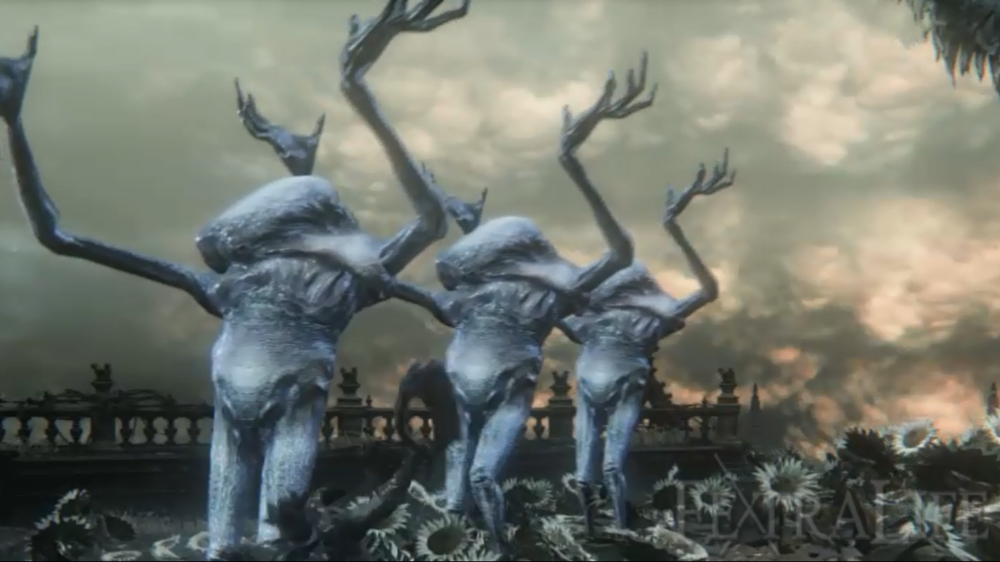
Falhas Vivas
As Falhas Vivas podem ser encontradas no Jardim dos Girassóis Celestiais, localizado no topo do Salão de Pesquisas.
Este boss consiste em múltiplas criaturas que compartilham uma única barra de vida. Durante a batalha, novas Falhas Vivas surgem constantemente na arena para substituir aquelas que forem derrotadas. Elas utilizam ataques físicos lentos, projéteis arcanos e golpes de longo alcance com seus braços. Em determinados momentos, o grupo pode conjurar uma poderosa chuva de meteoros que cobre grande parte da arena, obrigando o jogador a utilizar os obstáculos do cenário para se proteger.
Falhas Vivas têm fraqueza a dano de Raio e podem ser facilmente interrompidas durante a conjuração de alguns de seus ataques arcanos.
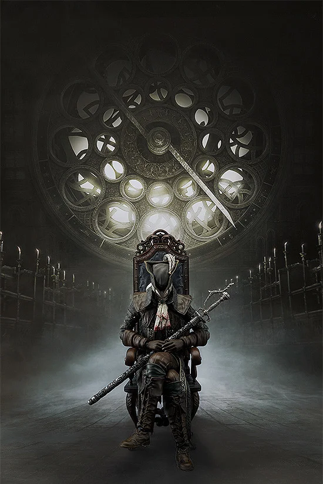
Lady Maria da Torre do Relógio Astral
A Lady Maria da Torre do Relógio Astral pode ser encontrada no topo da Torre do Relógio Astral, após a área do Salão de Pesquisas.
Este boss possui três fases distintas. Na primeira, Lady Maria utiliza sua Rakuyo para executar rápidos combos corpo a corpo e ataques de grande alcance. Após perder parte da vida, ela passa a utilizar seu próprio sangue para fortalecer seus golpes, aumentando o alcance e o dano de seus ataques. Na fase final, seus ataques ficam envoltos em chamas sangrentas, criando explosões e ondas de energia capazes de atingir o jogador mesmo à distância. Apesar de sua agressividade, muitos de seus golpes podem ser aparados com armas de fogo, abrindo oportunidades para ataques viscerais.
Lady Maria da Torre do Relógio Astral tem fraqueza a ataques viscerais e pode ser interrompida com facilidade por aparos bem executados durante grande parte do combate.
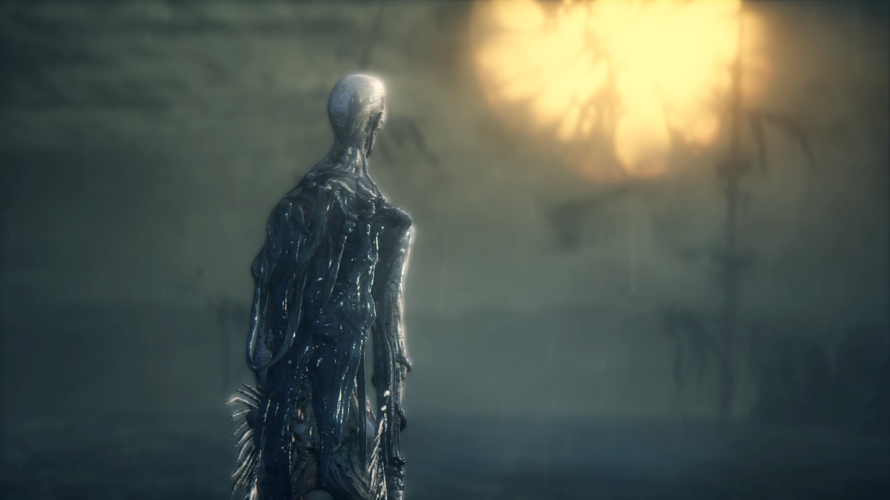
Orfão de Kos
O Órfão de Kos pode ser encontrado na costa da Vila de Pesca, logo após o cadáver de Kos. Sua derrota encerra os eventos principais da expansão.
Este boss possui duas fases extremamente agressivas. Na primeira, o Órfão utiliza a própria placenta como arma, realizando ataques rápidos, investidas e combos imprevisíveis que podem punir qualquer erro do jogador. Após perder parte de sua vida, ele entra em uma segunda fase ainda mais violenta, adquirindo aparência mais monstruosa e ganhando grande mobilidade. Nessa etapa, passa a utilizar ataques elétricos, saltos de longa distância e sequências de golpes capazes de cobrir praticamente toda a arena. Apesar da agressividade, diversos de seus ataques podem ser aparados com armas de fogo quando executados no momento correto.
Órfão de Kos tem fraqueza a dano de Raio e pode sofrer ataques viscerais após aparos bem-sucedidos ou ao receber dano suficiente em sua cabeça.
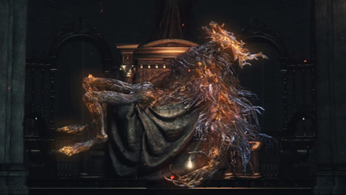
Laurence, o Primeiro Vigário
Laurence, o Primeiro Vigário pode ser encontrado na Grande Catedral do Pesadelo do Caçador após o jogador obter o Crânio de Laurence. Ele foi o fundador da Igreja de Cura e um dos responsáveis pelos eventos que levaram à queda de Yharnam.
Este boss possui duas fases distintas. Na primeira, Laurence luta de forma semelhante à Fera Clerical, utilizando golpes amplos, investidas e ataques devastadores com seus braços envoltos em fogo. Após perder parte de sua vida, ele entra em uma segunda fase na qual perde o uso das pernas e passa a rastejar pela arena, deixando rastros de lava que permanecem no chão e causam dano contínuo. Seus ataques tornam-se mais difíceis de evitar devido ao alcance das chamas e às áreas perigosas espalhadas pela arena.
Laurence, o Primeiro Vigário tem fraqueza a dano de Raio e pode ser atordoado ao sofrer dano suficiente em seus membros, criando oportunidades para ataques viscerais.